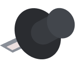
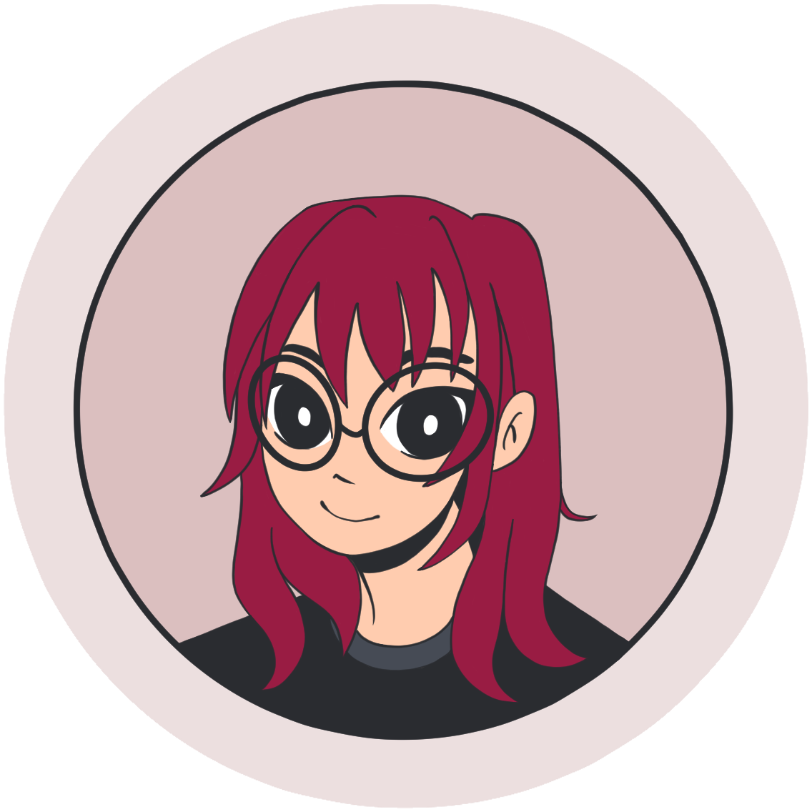
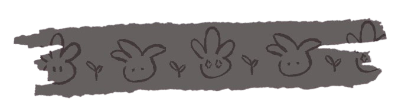
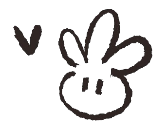

Hi, I'm Ines Machinho Rodrigues
Software Systems Major @ Simon Fraser University


Welcome to my personal website!
I'm a Software Systems student at Simon Fraser University who enjoys combining technology, design, and creativity. Through my creative hobbies and running AnicuteShop, I've developed a passion for design, branding, and creating things people enjoy. Today, I'm especially interested in front-end development and UI/UX design, where I can combine both my technical and creative skills.
Education
- The Odin Project - Web Development CurriculumMay 2026 - Present
- BASc. Computer Science - Software Systems @ Simon Fraser UniversitySept 2020 - May 2027 (Expected)
- Concept Art Diploma @ VANASJan 2023 - Dec 2023
- Introduction to Digital Arts @ VANASDec 2022
Skills
- HTML
- CSS
- Python
- C/C++
- SQL
- Git/GitHub
- Linux Commands
- Chrome DevTools
- Figma
- Balsamiq
- Maze
- Canva
- Adobe Photoshop
- Nomad Sculpt
Interests
- UI/UX Design
- Front-end Development
- Product Design
- 3D Sculpting
- Character Design
- Visual Storytelling
- Crochet
- Japanese Language, Music & Media
